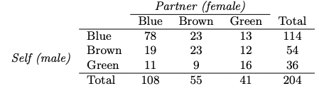

Conditional probability
Suppose we have an event \(A\) from one random process and an event \(B\) from a second random process such that \(P(A) = 0.3\), \(P(B) = 0.7\), and \(P(A \cap B) = 0.1\).
- Are the random processes independent?
- What is \(P(A|B)\)?
Assortative mating is a nonrandom mating pattern where individuals with similar genotypes and/or phenotypes mate with one another more frequently than what would be expected under a random mating pattern. Researchers studying this topic collected the following data on eye colors of 204 Scandinavian men and their female partners. For simplicity, we only include heterosexual relationships in this exercise.

- Find the probability that a randomly chosen male respondent or his partner has blue eyes.
- What is the probability that a randomly chosen male respondent with blue eyes has a partner with blue eyes?
- What is the probability that a randomly chosen male respondent with brown eyes has a partner with blue eyes? What about the probability of a randomly chosen male respondent with green eyes having a partner with blue eyes?
- Does it appear that the eye colors of male respondents and their partners are independent? Explain your reasoning.
\(^*\) To get to Middlebury College, a professor uses their car 30% of the time, walks 20% of the time, and bikes 50% of the time. They are late 5% when walking, 10% of the time when driving (because this is Vermont and people stop for all pedestrians), and 2% of the time when biking.
- What is the probability the professor drove to work if they were late?
- What is the probability the professor walked to work if they were on time?